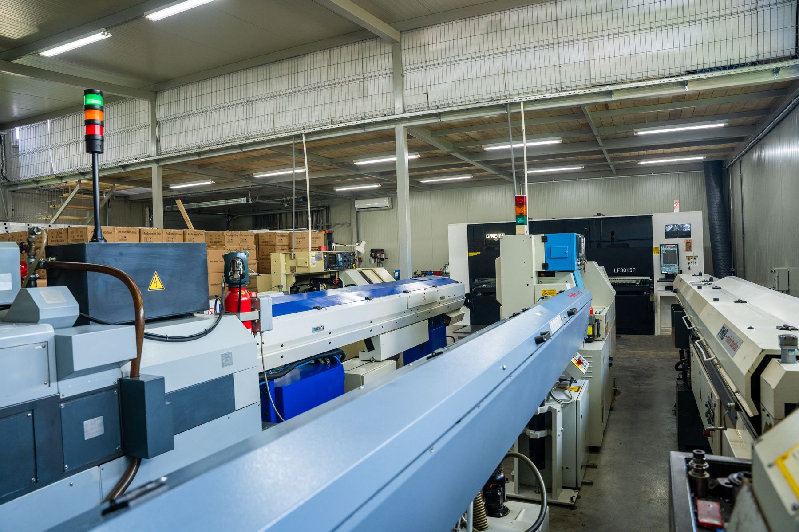
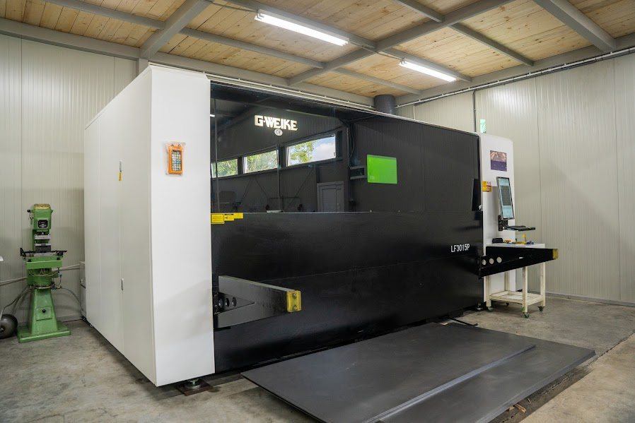
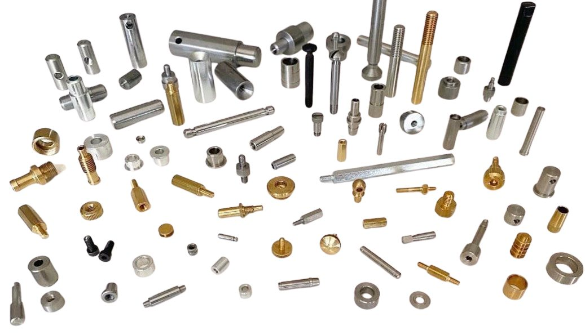

CNC služby
Zakázková výroba na stejných strojích, na kterých vznikají naše otvírače. Pošlete výkres, 3D model nebo vzorový díl a připravíme nabídku.

CNC soustružení
Sedm CNC soustružnických automatů STAR vyrábí soustružené díly o průměru 2 až 20 mm z tyčového materiálu: ocel, nerez, mosaz a hliník. Typické díly jsou konektory, distanční prvky, přípojky, pouzdra, kolíky, šrouby, matice a hřídele, v sériích od stovek po statisíce kusů.
- Průměr 2 až 20 mm, automaty s podavačem tyčí
- Ocel, nerezová ocel, mosaz, hliník
- Tolerance měřené a dokumentované pro každou šarži
- Opakované zakázky běží ze stejného programu, stejný výsledek

Řezání vláknovým laserem
Plechové díly z oceli, hliníku a mosazi řezané vláknovým laserem. Čisté hrany, které obvykle nepotřebují další úpravu, složité obrysy a jemné detaily. Cena závisí na počtu propalů, druhu kovu a tloušťce plechu.
- Ocelový, hliníkový, mosazný plech
- Hladké hrany, minimální dokončování
- Od jednotlivých kusů po série

Povrchová ochrana
Hotové díly můžeme dodat s povrchovou úpravou, kterou vaše aplikace vyžaduje:
Máte výkres?
Pošlete ho s množstvím a materiálem a ozveme se s cenou a termínem.